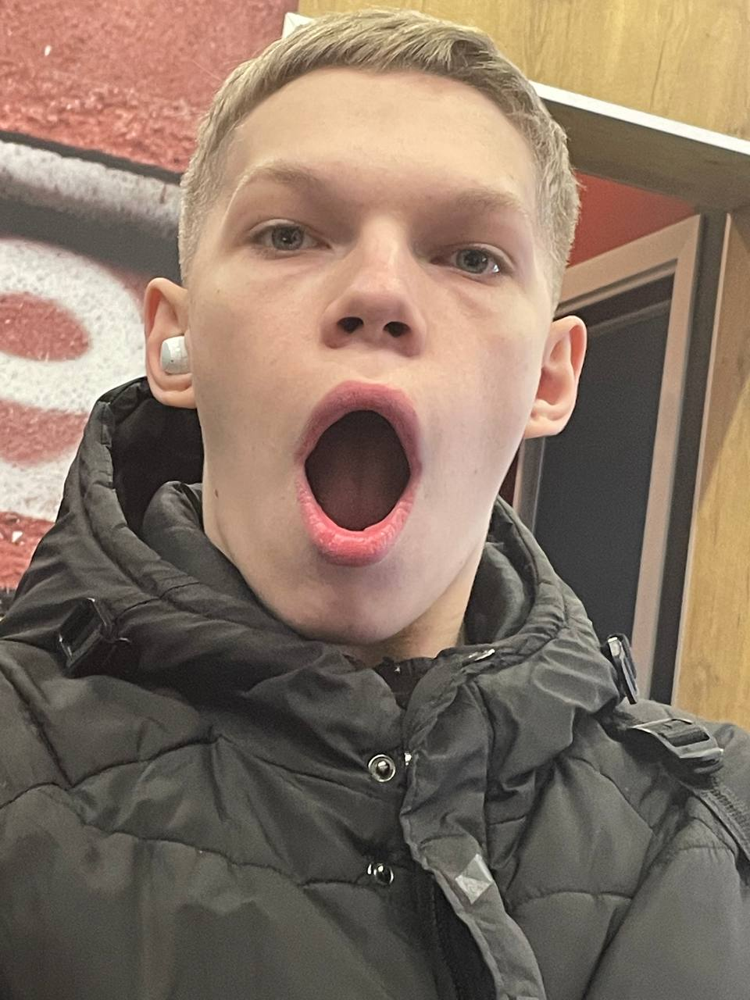
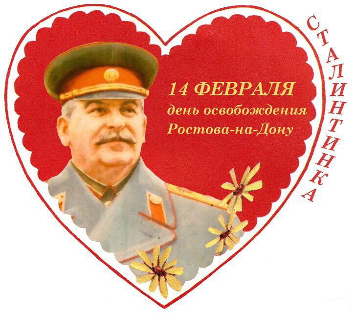
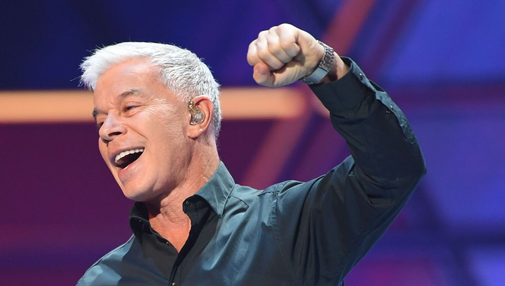

Новости лучшей группы 103ИС-22
-
Новость: Даниил Левкович потерял все свои последние зубы
Известный актер Даниил Левкович потерял все свои зубы в результате несчастного случая на съемочной площадке своего нового фильма. Согласно его представителям, Левкович был втянут в экшн-сцену, в которой ему пришлось сражаться с несколькими злодеями, и в результате удара он потерял все зубы. После инцидента Левкович был доставлен в стоматологическую клинику, где ему провели необходимую операцию по установке зубных протезов. Актер заявил, что это был самый трудный момент в его жизни, но он благодарен своей команде за поддержку и помощь во время реабилитации. Он также поблагодарил своих поклонников за их любовь и поддержку в этом непростом периоде.
-
День всех влюбеленных!
2 месяца назад был праздник посвященный дню всех влюбленных, я лично люблю кушать, а вы?
-
Я ЛЮБЛЮ ОЛЕГА ГАЗМАНОВА
⚡️Газманову выделили 17 миллионов рублей из бюджета на патриотические песни. За выделенные финансы Газманов создаст интернет-базу патриотических песен, которая будет называться «Родники». «Мы хотим, чтобы был материал музыкальный и поэтический, который бы помогал нашей стране, развивал её. В конкурсе будет пять номинаций», — рассказал артист.